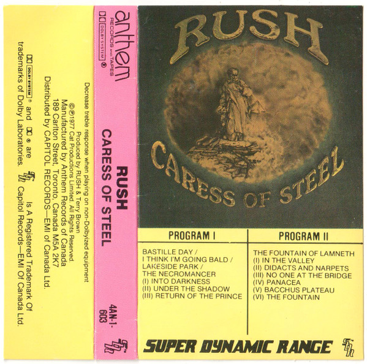

CASSETTE
Caress Of Steel
Rush
Media: — · Sleeve: —
—
Personal
Discogs SuggestedCA$39.38
Discogs MedianCA$39.38
Discogs HighCA$39.38
- Physical Copy ID
- BB-CAS-281
- Year
- 1975
- Label
- Anthem (5)
- Catalog #
- 4AN-1-603
- Country
- CACanada
- Genre / Style
- Rock · Hard Rock, Prog Rock